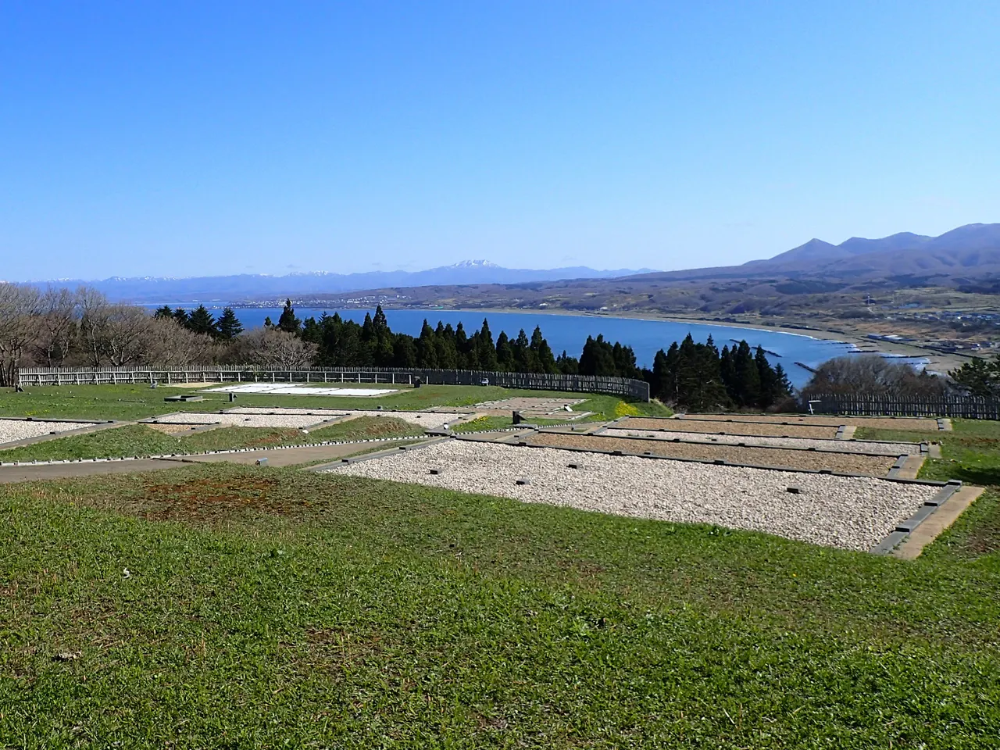
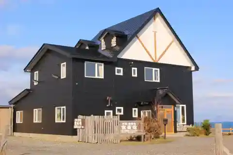
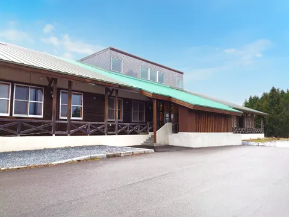
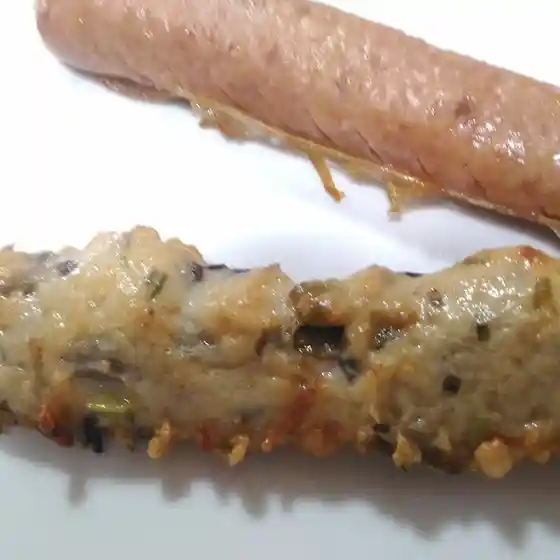
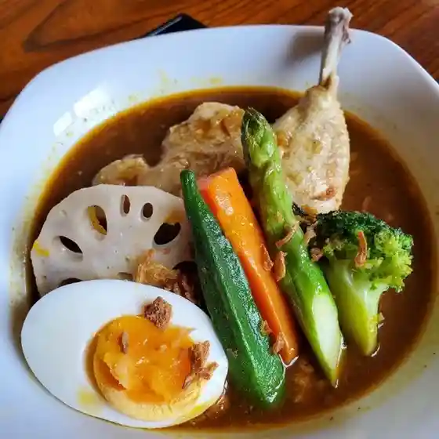
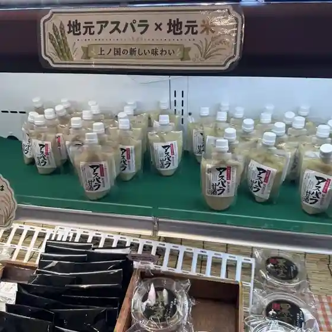
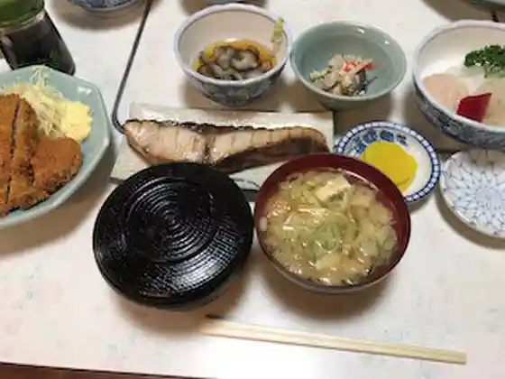
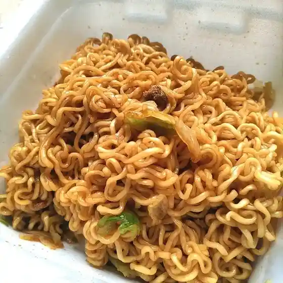
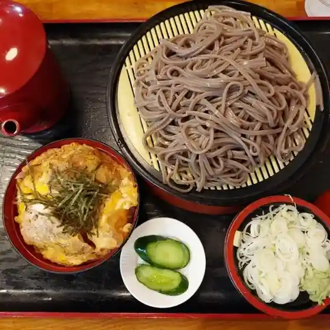

Kaminokuni
Kaminokuni · Hokkaido
Kaminokuni
Highlighted on the Hokkaido map.

Stay
料理宿 宮寿司

Ryori-yado Miyazushi
Inn run by a sushi kitchen in Kaminokuni, Hokkaido.
上ノ国ワイナリー

Kaminokuni Winery
Winery lodging in Kaminokuni, Hokkaido.
Dining
ショッピングこばやし

Shoppingu Kobayashi
ふくはら

Fukuhara
グルメブティックもんじゅ

Gurumebuteikku Monju
弁天寿司・紅蘭食堂

Benten Sushi Kouran Shokudou
LAWSON 上ノ国大留店

Lawson Ue No Kokudai Ryuu Mise
民宿北斗

Minshuku Hokuto
セイコーマート 上ノ国店

Seikoomaato Ue No Kuni Mise
どばそば和家

Dobasoba Wa Ie
工房 kudo
Koubou Kudo
民宿の来福
Minshuku No Raifuku
よ志栄
Yo Kokorozashi Sakae
デリカささなみ
Derika Sasanami
居酒屋美里
Izakaya Misato
翔
Shou
上ノ国町国民温泉保養センター
Ue No Kuni Machi Kokumin Onsen Hoyou Sentaa
夷王亭
Ebisu Ou Tei
もがり屋
Mogari Ya
上ノ国町物産センター
Ue No Kuni Machi Bussan Sentaa
幸村荘
Yukimura Sou
澤谷旅館
Sawatani Ryokan
cafe iroha
Cafe Iroha
焼肉れすとらん楽園
Yakiniku Resutoran Rakuen
ラーメンめんぞう・焼き肉神ノ国
Raamen Menzou Yakiniku Kami No Kuni
笹浪精肉店
Sasa Nami Seinikuten